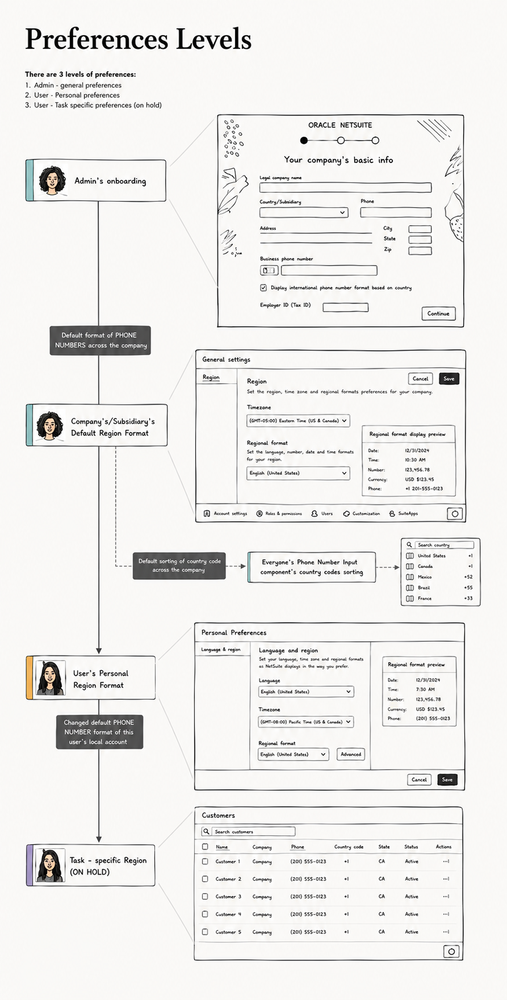
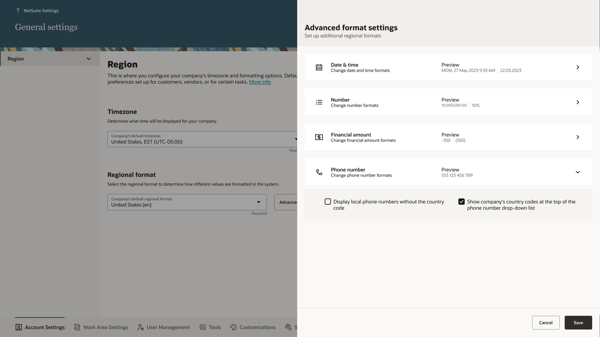
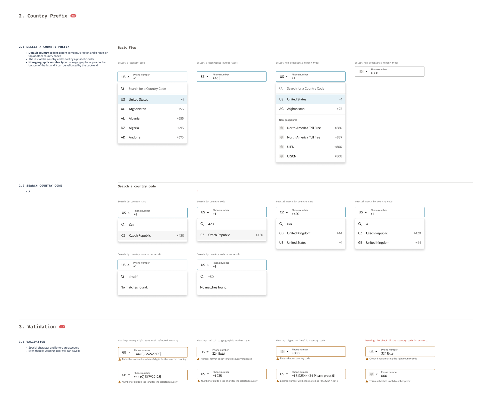

Why a phone number is hard in an ERP
In a consumer app, a phone number is one field on a signup form. In an ERP, it lives on customer, employee, and vendor records; prints on invoices and name cards; feeds VoIP calls; gets copy-pasted between systems all day — across every country’s formatting conventions simultaneously. A Singapore company calls Japanese customers from a US-configured account. Whose format wins?
Start with an audit, not a mockup
I began with a UX audit of how the existing product handled phone numbers. The findings explained years of quiet user pain:
- Numbers were saved and displayed exactly as typed — any format, no validation.
- Format masking behaved in ways users didn’t expect.
- No instructions on expected format — users were left guessing.
- No separate extension field — extensions were crammed into the number itself.
Turn unclear requirements into explicit assumptions
The PM requirements arrived vague and, on inspection, full of unstated assumptions. Instead of designing to them — or arguing — I ran a structured Know / Unknown / Assumption session with the product team. Laying out what we actually knew versus what we were assuming let the PM discover the gaps in their own framing, and the requirements were rewritten from that shared understanding. My manager later cited this as a model for handling ambiguous requirements.
From there, discovery was systematic: use cases and personas mapping every scenario to the record types and pages where phone numbers live, plus a competitor analysis of how Dynamics 365, QuickBooks, and Dynamics GP handle formatting.
The key finding: two scenarios define the whole product
The discovery converged on two scenarios that, between them, explain everything the component must do.
Scenario 1 — capturing numbers on records
Three personas, three record types, one component:
- Customer records — Amita (sales) adds phone numbers when creating customer records, calls customers from those numbers, and tracks the communication history.
- Vendor records — Cameron (operations) adds phone numbers when creating vendor records for purchasing and contract work.
- Employee records — Finley (hiring manager) adds phone numbers when creating employee records.
The insight in scenario 1: a phone number is never data at rest. It gets dialed, tracked against a history, printed, exported. Capture is only the beginning of its life — which is why validation at entry matters so much.
Scenario 2 — controlling the format, at three levels
The second scenario is where the product’s real shape emerged. Different people need different formats — at different scopes:
- System-wide global setup. Finley has had basic NetSuite training but is new to many tasks. Working through company setup, she sets the international format as the org-wide default — so NetSuite works as expected for employees, customers, and vendors based in different countries.
- User-specific setup. Amita handles only local US customers. She sets her own preference to the national format: she doesn’t want country codes cluttering every number she looks at all day. The quiet bonus: with local numbers stripped of codes, any foreign number instantly stands out.
- Task-based local configuration. Amita exports a list of customer records to CSV — and for the file, she needs the international format, different from the national format in her personal preferences. Format must be switchable at the point of the task, without touching her settings.

From the working file: how each preference level maps to a real screen — admin onboarding, company settings, personal preferences, and the task level scoped for a later phase.
The component: flexible on the surface, smart underneath
Everything the research found converges in the component itself — because whatever the settings say, the component is where every user actually meets a phone number. Designing it started with a competitor scan and an exhaustive inventory of input behaviors: some users type the country code straight into the number, some prefer to select it from the dropdown, some want to search it — by country name or by code, exact or partial.
Rather than pick one behavior and punish the rest, the component supports them all — and stays coherent because of the intelligence underneath: a detection algorithm that recognizes whether the user’s input was meant to include a country code or not, and resolves it accordingly. Type “+81…”, pick from the list, or search “Jap” — you end up in the same clean, validated state. Flexibility for the user, consistency for the system.
The design: format governance, not just an input
The interesting design problem wasn’t the input box — it was who decides the format. The three-level preference model fell directly out of scenario 2: a company-wide default set by the admin, a per-user override for people whose work doesn’t match the company’s shape, and a task-level switch at the point of use.

The admin level, designed: phone number format lives with the other regional formats — date, number, currency — each with a live preview. The expanded options carry the research straight into the UI, including “display local numbers without the country code.”
The component itself absorbed the audit findings: a country-prefix selector with search, defaulting to the parent company’s region and supporting non-geographic numbers like toll-free ranges; validation that guides rather than blocks — wrong digit count, format mismatch, and unknown country codes each get a specific, recoverable warning, and the user can still save; live formatting hints so users see how their entry will be stored; and a proper extension field at last. All of it specified to design-system standard, so every team on the new platform inherits the same behavior.
Outcome

From the component spec: the country-prefix flows (select, search, partial match, no result) and the validation states that guide without blocking.
- Now a global component in NetSuite Next — any team, any form, one behavior, with the formatting preference settings alongside it.
- The junior designer I mentored through this project went from supporting discovery to owning design tasks — the project was her growth arc as much as the component’s.
- Wrapped ahead of schedule after the requirements clarified.
What I learned
The smallest components hide the most complexity — and they’re where design systems earn their keep, because a phone number done right once is done right everywhere. And clarity work is design work: the Know/Unknown/Assumption session did more for this component’s quality than any number of mockup iterations would have.